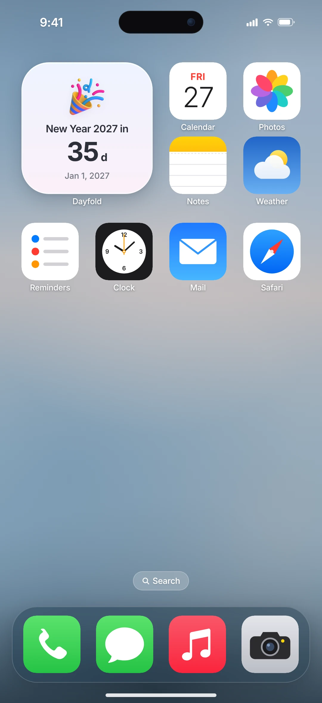

Put a 2027 New Year Countdown on Your iPhone
New Year’s Day 2027 falls on Friday, 1 January 2027. iPhone does not include a built-in widget that counts down to that date, so if you want the number on your Lock Screen or Home Screen you need a countdown app with widgets. In Dayfold, create a moment dated 1 January 2027, then add a Dayfold widget; the day count updates as the date approaches. After the day passes, the same moment counts up (days since). There is no verified automatic New Year theme and no verified “repeat every New Year’s Day” product mode — if you want a 2028 countdown, create a new moment for 1 January 2028, or use Repeat only if you choose to, knowing the store documents yearly repeats for birthdays and anniversaries.

Quick facts
| Target date | Friday, 1 January 2027 |
|---|---|
| What you see | Days remaining, on a Lock Screen or Home Screen widget |
| System | iPhone, iOS 17 or later |
| After 1 January | The moment counts up (days into 2027) |
| Auto New Year theme | Not verified — do not expect a special skin from the name “New Year” |
| Auto every year | Not claimed as a New Year feature; create 2028 separately, or treat Repeat with care |
| Price | Free to download; four active moments free; Dayfold Pro optional (monthly or one-time Lifetime) |
A date, not a holiday mode
A New Year countdown is a single date: 1 January 2027. Dayfold already does dated countdowns — official screenshots include “Christmas in 46 d” and “Wedding in 33 d.” You create the same kind of moment for New Year and point a widget at it.
Dayfold uses your chosen card style and emoji for a New Year countdown rather than an automatic fireworks or champagne theme. Pick Flip Calendar, Retro LCD, Emoji, or Ticket and add an emoji like 🎆 or ✨ to match the occasion.

How to add a 2027 countdown
- Download Dayfold and open it once so iOS lists its widgets.
- Tap + to open Create a Moment.
- Name it (for example “New Year” or “2027”) and set Date to January 1, 2027. If you would rather count to New Year’s Eve, set 31 December 2026 instead; the rest of the steps stay the same.
- Optional: mark Primary so this is the default widget through December. Optional: an on-the-day reminder is free.
- Save and pick a card style. Emoji, Flip Calendar and Ticket are free.
- Add a Lock Screen widget: touch and hold the Lock Screen, tap Customize, tap Add Widgets, and choose Dayfold. On iOS 17 or later, tap the widget and select this moment if it is not already pinned.
- Optionally add a small or medium Home Screen widget from the Home Screen gallery.

If you also want a Christmas countdown in late December, that is a second moment. The free plan allows four active moments, so Christmas and New Year can both stay pinned.
After midnight on 1 January
Once the date has passed, Dayfold counts up. Official site copy: the card shows the name followed by “for” and the number of days, and the Lock Screen widget shows “N days ago.” Leave it if you like a “days into 2027” counter, or delete it.
For 2028, create a new moment dated 1 January 2028. Do not assume Dayfold will roll a New Year moment forward on its own. Yearly Repeat is documented for birthdays and anniversaries; this page does not treat New Year’s Day as a confirmed annual cycle.
Free and optional Pro
Free to download, no account, stored on your iPhone (cloud sync is not available). Four active moments and three card styles are free. Dayfold Pro is optional, monthly or as a one-time Lifetime purchase.
FAQ
Can I put a New Year 2027 countdown on my iPhone Lock Screen?
Yes. iPhone does not include a built-in countdown-to-a-date widget. In Dayfold, create a moment for 1 January 2027, then add a Lock Screen widget. Dayfold requires iOS 17 or later.
Does Dayfold have a New Year theme?
Not that we can verify. You can name the moment and choose a card style, but there is no confirmed automatic New Year skin.
What happens after 1 January 2027?
Dayfold starts counting up: the card shows the name followed by “for” and the number of days, and the Lock Screen widget shows “N days ago.” You can keep it or delete it.
Will it automatically count down to 2028?
No automatic New Year cycle is claimed here. If you want a 2028 countdown, create a new moment for 1 January 2028.
Is Dayfold free?
Yes. Dayfold is free to download. You can keep four active moments and use three card styles without paying. Dayfold Pro is an optional monthly plan or one-time Lifetime purchase.